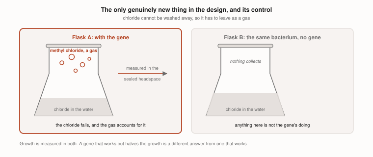

Experiment 4: does the added gene blow the chlorine off?
Destroying perchlorate leaves chloride behind in the damp dirt, and with no wash the only way out is as a gas. So one gene from a salt marsh plant goes into the bacterium that runs stage 2, and it turns the chloride into methyl chloride, which boils at minus 24 and drifts out of the bed. This is the only genuinely new thing in version 3. Everything else is an organism doing what it already does, somewhere it has not been tried. This experiment asks whether the borrowed gene works, and how fast.
| What we would be asking of you | |
|---|---|
| The question | Does Xanthobacter carrying a methyl halide transferase turn chloride into methyl chloride while living on gas, and fast enough to keep up with stage 1? |
| Bench space | 8 flasks, inside your licensed space |
| How long | Six weeks |
| Biosafety | A laboratory licensed for genetically modified organisms. This is the one experiment in the project that needs one |
| From the lab | The same gas mix as experiment 3, and a headspace gas chromatograph |
| From us | The strain, once it exists, and everything else listed below |
| Student on site | Whatever your licence allows, including none at all |
Why this one is last. Not because it matters least. It matters most. It is last because the first three need no licence, and any one of them can end the design before anybody modifies anything.
Why it matters
| What we are looking at | What it says |
|---|---|
| What is known | The enzyme is well described in Batis maritima, a salt marsh shrub, and some wood-rotting fungi make something similar. The host has already had genes put into it: the same 2022 group built plasmids and promoters for it and made it overproduce a vitamin fifteen times over |
| Why the gap matters | We looked for a microbe that already turns chloride into a gas and found none. Every well studied version of this enzyme comes from a plant, and a plant enzyme in a gas-fed bacterium is an assumption, not a result |
| What this decides | Whether the chlorine can leave at all without plumbing. If it cannot, version 3 needs a wash back, and it stops being a version 3 |
Design
Four treatments, two flasks each, 8 flasks.
| Flask | What is in it |
|---|---|
| A | Xanthobacter with the gene, chloride at bed levels, gas mix |
| B | Xanthobacter without the gene, same chloride, same gas |
| C | with the gene, no chloride added |
| D | with the gene, chloride, no cells, sterile |
- B is the control that matters. It says whether any methyl chloride is coming from the gene rather than from the medium, the rubber or the bacterium itself.
- C shows the enzyme is waiting on chloride, not making gas from something else.
- D shows the flask makes none on its own.
- Chloride goes in at the level a real bed would reach once stage 1 has destroyed Martian perchlorate, which is where the model puts it, and a second pair at twice that, because the model has never been checked against a bench.

Materials
| What | How much |
|---|---|
| We bring | |
| The strain: Xanthobacter autotrophicus Py2 carrying a methyl halide transferase | built to order, once a licensed lab has agreed to host it |
| The plasmid map, the sequence and the assembly notes | in advance, for your biosafety officer to read before agreeing to anything |
| Sodium chloride, and mineral salts | |
| The lab already has | |
| Sealed flasks or serum bottles with septum lids | 8 |
| Carbon dioxide, nitrogen, hydrogen and air, and a way to mix them | |
| A headspace gas chromatograph | for the methyl chloride |
| A chloride electrode or ion chromatograph | for the chloride going down |
| An incubator or warm shelf at 30 degrees |
On the gas that is made. Methyl chloride is the product, and the point of the experiment is that it leaves the liquid. It is measured in a sealed headspace and vented through your fume hood, in milligram quantities, the way any volatile product of a small culture would be.
Setup
| On day one | Why | |
|---|---|---|
| 1 | Grow both strains up on gas until they are established, before any chloride goes in | so the chloride is the only thing that changes |
| 2 | Add chloride to A, B and D at the bed level, and to the second pair at twice it | |
| 3 | Flush every headspace with the gas mix and seal | |
| 4 | 30 degrees, dark. Note the date |
What happens, and when
| When | What to do |
|---|---|
| Twice a week | A headspace sample from every flask for methyl chloride, and a liquid sample for chloride. Flush and reseal |
| Weekly | A cell count, because a gene that works but halves the growth is a different answer from one that works |
| Day 42 | Final samples, and the rate worked out from the whole series rather than from the last point |
What we expect to see
| Where to look | What we expect |
|---|---|
| Flask A | Methyl chloride appearing in the headspace and chloride falling in the liquid, the two roughly accounting for each other |
| Flask B | None, or a trace. Anything more than a trace means the signal is not the gene |
| Cell counts | Slower growth in A than B. Making the gas spends carbon, and we expect to pay for it |
| What would surprise us | A rate high enough to clear a bed in days rather than weeks |
| What would end it | No gas, or a rate so low that the chloride outlasts everything else in the design |
What this experiment does not settle
It answers the biology and not the engineering. How fast the gas comes off is a microbiology question, and this settles it. Sizing the vent that carries it outside is somebody else’s, and it should go to whoever designs the air handling as soon as there is a rate to hand them.
Recording rules
- Label by number and keep the key aside until the last sample is measured.
- Write down what is seen, not what it means. A leaky septum, a missed flush or a flask that stopped growing gets a note on the day, and the note stays in the report.
The sheets, blank and filled in
Spreadsheets, printed and filled in by hand at the bench, then typed up exactly as written. Every column is defined in the codebook. They are empty, because nobody has run this yet.
| The sheet | What goes in it |
|---|---|
| flasks.csv | which flask carries the gene, and how much chloride went in |
| headspace.csv | methyl chloride in the sealed headspace, twice a week |
| chloride.csv | chloride in the liquid, on the same days, so the two can be set against each other |
| cells.csv | growth, because a gene that works but costs half the growth is a different answer |
The same sheets also exist with invented numbers in them, made by a script so the sheets can be checked before there is real data. This set is the expected outcome: the gas coming off, the chloride falling to match it, and the gene costing some growth. flasks · headspace · chloride · cells · a dry run, not a result
The analysis reads those sheets and writes a report: charts, a verdict for each question, and its own checks on the data. The rules that decide the verdicts were fixed before any data existed. See what that report looks like, built from the invented sheets, and it says dry run in its own title
Waste
| What is left | Where it goes |
|---|---|
| Cultures | inactivated and disposed of exactly as your licence requires. This is the modified organism, and your rules govern, not ours |
| The strain itself | destroyed at the end, or kept by you, whichever your licence prefers |
Saanvi Pagadala · Granite Bay, CA